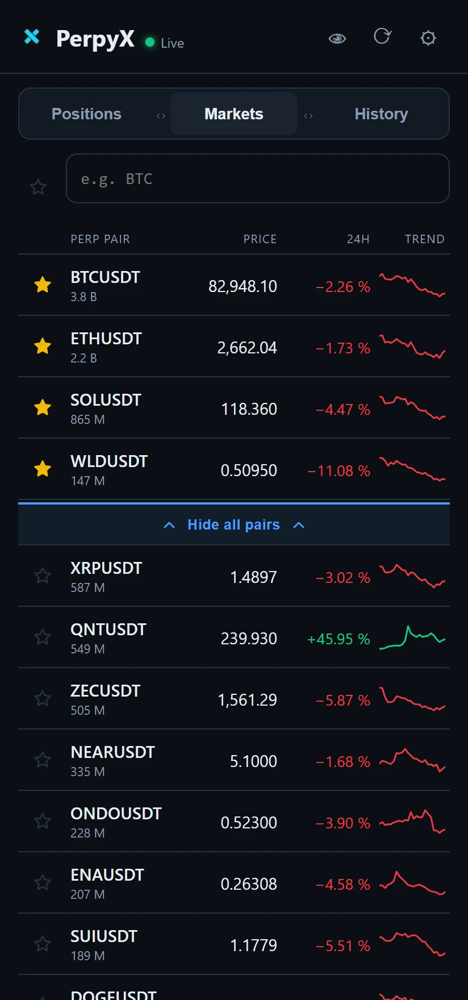
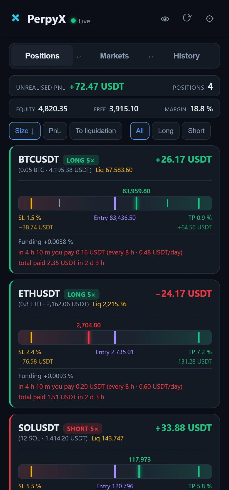

PerpyX
Your perpetuals,
at a glance.
Read-only position monitor for Android


PerpyX
Made for one hand.
Built for the fold.
Live PnL · SL/TP at a glance · real funding
Your perpetuals,
at a glance.
Bybit
Binance
Hyperliquid
OKX
Read-only · Android · beta soon at perpyx.com
PerpyX
Funding
Real cost per position
SL / TP
Every level at a glance
Markets
AI · Meme · L1 filters
History
Closed trades on the chart
Read-only position monitor · Android · foldable-ready
PerpyX
Made for one hand.
Built for the fold.
Live PnL · SL/TP at a glance · real funding